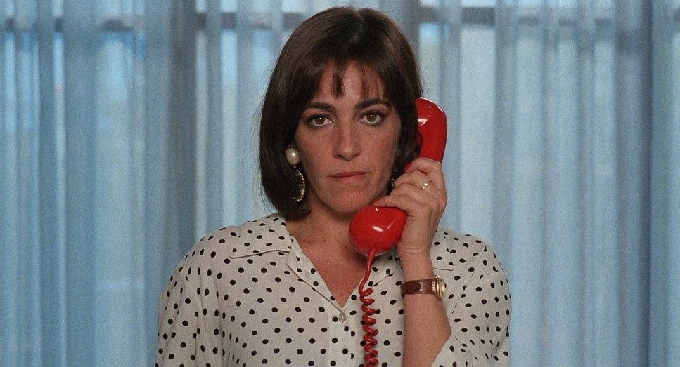
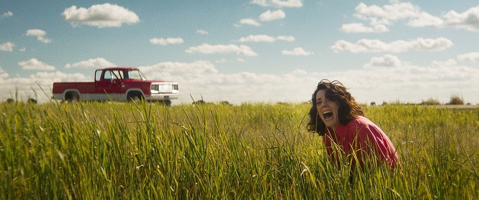

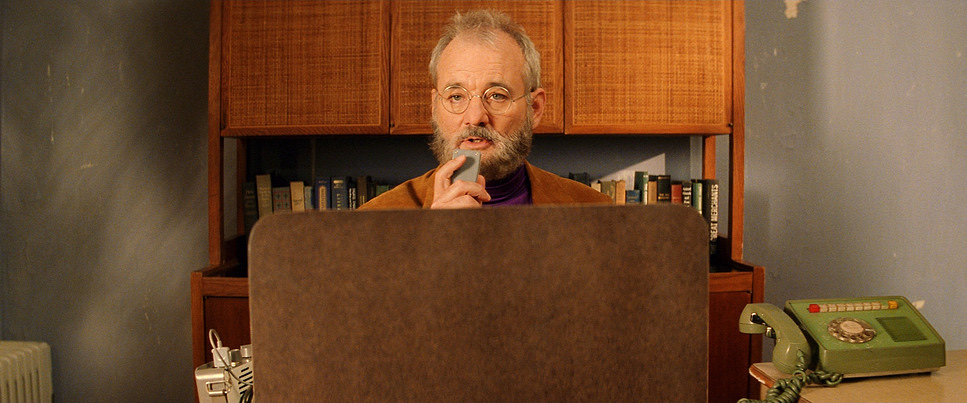
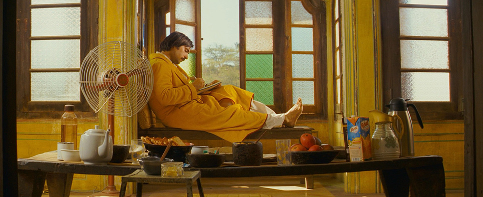

After a spirited conversation with Noah I immediately knew I wanted to be apart of this. The creative direction for Fall 26 feels deeply aligned, drawing references from Andersson, Owens, Parr, Errol Morris, & Jeunet to build this highly stylized micro worlds that feel cinematic, witty, and slightly absurd.
The intention is to create situational narratives where the product gets to exist naturally within these worlds, rather than being presented as this overly lit hero product. These are episodic in nature and something that can be scaled and catered to various seasons: summer, holidays, family, birthdays, etc.
This deck is how we'd make it. Two films, fourteen characters, one tone, and plenty of space for honey to just be in the room.




A warm slightly over-saturated world designed to delicately tiptoe that line between reality and dreamlike. This warm vintage-inspired world with an emphasis on primary colors will remain the visual language throughout all videos, making a look that is cohesive, recognizable, and repeatable in nature. Despite being such a distinct and stylized world, nothing should feel overly polished or precious. Designed to feel both nostalgic and timeless at the same time.
Everything in this campaign rises or falls on timing. Comedy here is comedy by noticing. We hold the frame one beat past comfortable. We let the room HMU, wardrobe, props talk.
The honey is a guest in the shot, not the point of the shot. The eater is the eater. The honey is just what they happen to be eating. Done well, the films feel like documentaries that happen to have a brand in them. Done poorly, they feel like ads with a quirk filter. We know the difference.
Camera movement is to be intentional and always locked off, designed to show all of the world needed for each concept and not too much more. The framing / composition for the campaign should feel like a painting with movement, with intentional off-center subjects and props in the fore and background to give dimension to the otherwise static frame. Finding creative ways to incorporate small branded details in these props to live in the physical space that feel discovered rather than staged.
"Eat it near a horse. Eat it in a stairwell you don't belong in. Eat it during the group photo, just slightly out of frame."


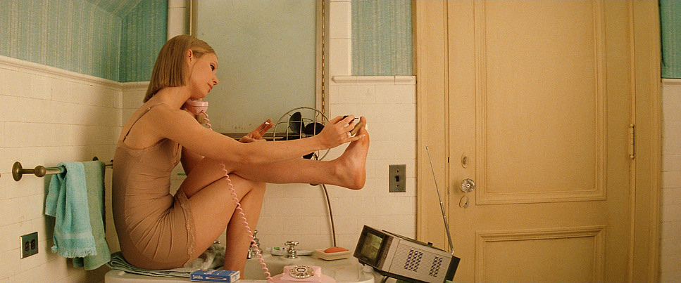
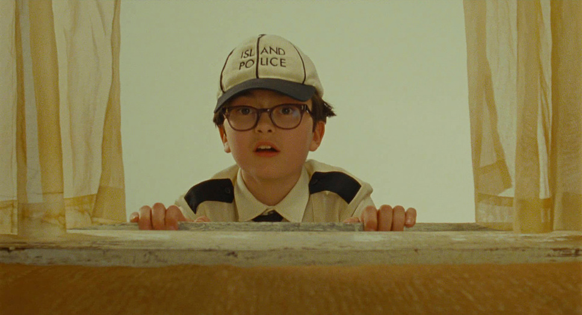
Locked-off shots, one scenario per shot. Each beat lands in 5–20 seconds.
The VO threads them: "Eat it on the wrong train. Eat it while holding something fragile. Eat it mid-apology."
The frame is the joke — the setting does the work.
We end on: "It's your honey."
A warm, slightly over-saturated world designed to delicately teeter that line between reality and dreamlike. This warm vintage-inspired world with an emphasis on primary colors will remain the visual language throughout, making a look that is cohesive, recognizable, and repeatable in nature. Despite being such a distinct and stylized world, nothing should feel overly polished or precious. Designed to feel both nostalgic and timeless at the same time. Roy Andersson and Wes Anderson framing — rigid centered or strict rule-of-thirds.
"Pairs well with ricotta toast. Also with timeshare scams, motel ice, and trying to appreciate jazz."


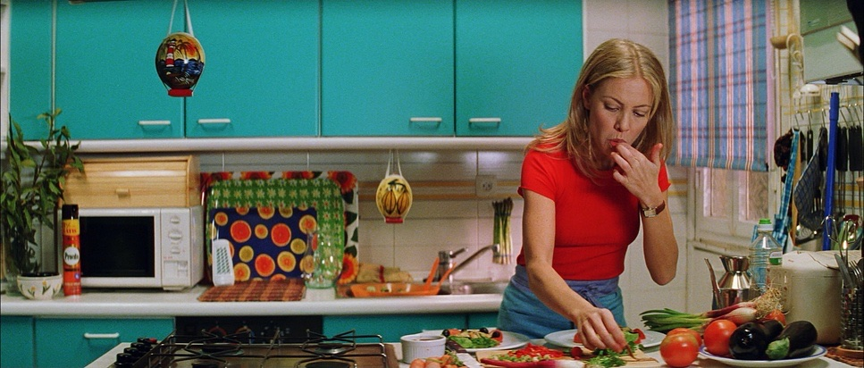
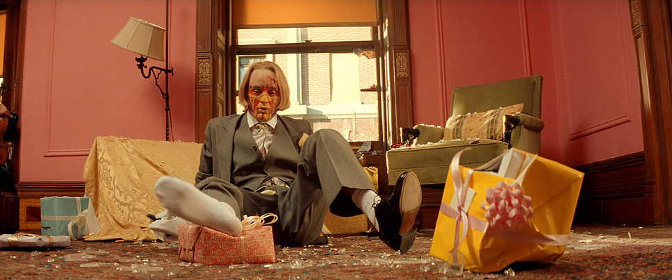
Pairing vignettes from our Eat It Anywhere series. These are 4–10 second vignettes either building on the Eat It Anywhere series (if posting this 2nd) where these characters and situations are introduced (OR) serving as a snippet into the worlds' of these characters that we then get to dive into deeper with Eat It Anywhere (if posting 1st). A scene from ordinary life: a tanning bed, a sad ballet class, a formal dinner-for-one. Honey enters the frame. A super lands: "GOES WITH FRAGILE MASCULINITY."
Same world as Film 01 but with title cards integrated into the frame rather than a separate title card — set in brand mono, dropped into the negative space the production design leaves us. No graphic backgrounds, no shadows under the type.
Fourteen specific people. The films don't keep inventing new characters — they follow these. Each one shows up across the campaign, doing what they do, eating what they eat.
US Army Commander

35-year career. Two combat tours. A chest you can read. Spends Sunday afternoons assembling scale model trains with a pair of tweezers. Hasn't said "I love you" out loud since the early Reagan administration.
Greeves dismisses a lieutenant with a strong "get out," waits for the latch to click, and releases a smile no outside observer has ever seen. He squeezes a Honey Dept. into his mouth with the giddiness of a six-year-old opening a present.
Goes with overcompensating with authority.
Professional dog walker
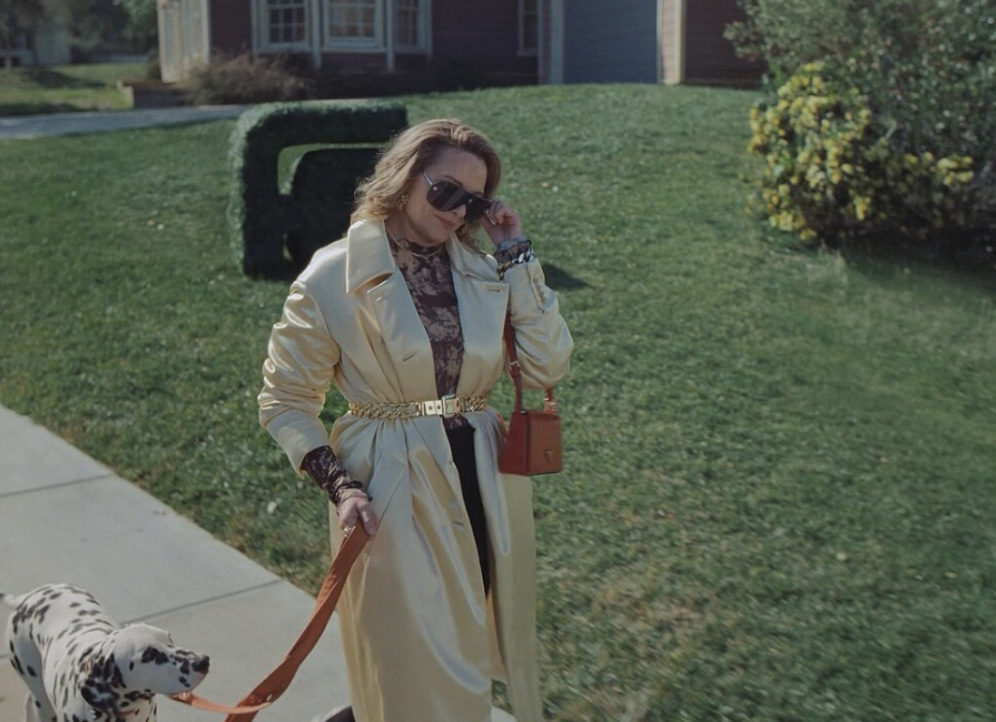
31. Charges $400 per walk. Twelve dogs in her standing rotation. Bangs cut by a stylist who flies in from Milan. Calls every dog by its owner's last name. Owns no dogs.
Cory carves down a sunny LA street at a 7-minute mile pace, 11 dogs in formation, sunglasses on at 8am. She is the star of her own world — like walking down a Paris fashion week runway. Slow motion. She pulls out a Honey Dept. and squeezes it into her mouth without breaking pace, eye contact, or expression.
Goes with delusionally being the main character.
Beekeeper
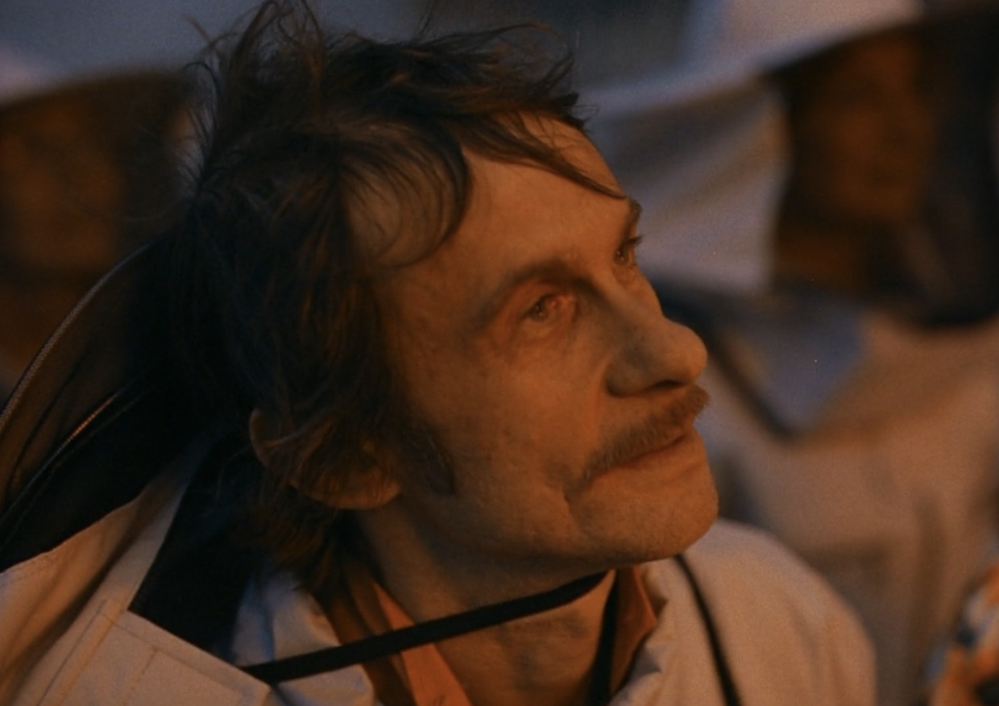
42 years old. Eleven thousand career stings. Names every queen after a vintage car. Drinks one Schlitz a night. Hasn't been to a movie theater since 1979 but reads every review in the Sunday paper.
Linwood collapses into a folding chair, exhausted from a long day's work. He peels off the mesh helmet and squeezes a Honey Dept. into his mouth while ten thousand of his own bees swarm frantically somewhere just out of frame. He doesn't flinch.
Goes with getting high off your own supply.
Bodybuilder

44. Lives at home. Owns fourteen cut-off sweat suits, all gray, all from 1991–1994. Calls his mother at 4pm every day to find out what's for dinner. Tells everyone his bench max before his name.
Frank and Richard are mid-donut in their cruiser when Frank produces a Honey Dept. from his pocket and drizzles a slow, careful zigzag across his jelly-filled donut. We hear on their intercom "Paging cruiser 3150, hello cruiser 3150?" They look at each other and turn down the volume as Frank honeys Richard's donut.
Goes with fragile masculinity.
Cyclist
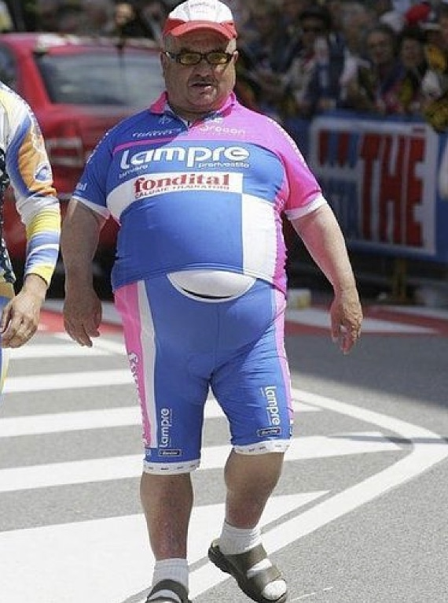
29. Belgian-American. Four straight gran fondos in the bottom 5%. Studio apartment with more bikes than furniture and a betta fish named Doping Allegation.
Frank and Richard are mid-donut in their cruiser when Frank produces a Honey Dept. from his pocket and drizzles a slow, careful zigzag across his jelly-filled donut. We hear on their intercom "Paging cruiser 3150, hello cruiser 3150?" They look at each other and turn down the volume as Frank honeys Richard's donut.
Goes with not pulling anyone over. They remain in the cop car unphased as we hear a car chase happening right in front of them, off camera.
Bingo Player
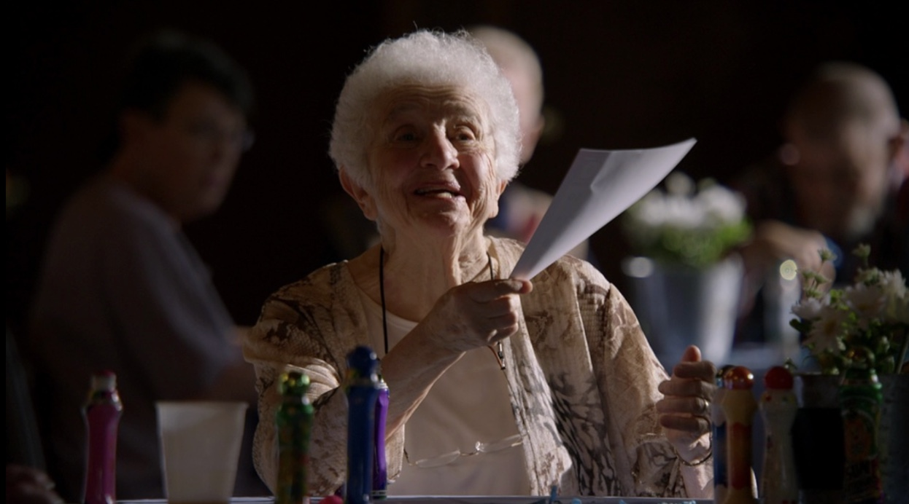
81. Same seat, Tuesdays and Thursdays, for 23 years. Won $2,400 in 1987 and hasn't won since. Hasn't spoken to her sister since she beat her in bingo 15 years ago.
Frank and Richard are mid-donut in their cruiser when Frank produces a Honey Dept. from his pocket and drizzles a slow, careful zigzag across his jelly-filled donut. We hear on their intercom "Paging cruiser 3150, hello cruiser 3150?" They look at each other and turn down the volume as Frank honeys Richard's donut.
Goes with not pulling anyone over. They remain in the cop car unphased as we hear a car chase happening right in front of them, off camera.
Frankie Rezardo & Richard Dent · Police Officers

Partners 19 years. Parked behind the laundromat at 6:42am every weekday. Frank does the crossword puzzles in their downtime while Richard practices his harmonica. Neither have pulled anyone over in a calendar year.
Frank and Richard are mid-donut in their cruiser when Frank produces a Honey Dept. from his pocket and drizzles a slow, careful zigzag across his jelly-filled donut. We hear on their intercom "Paging cruiser 3150, hello cruiser 3150?" They look at each other and turn down the volume as Frank honeys Richard's donut.
Goes with not pulling anyone over. They remain in the cop car unphased as we hear a car chase happening right in front of them, off camera.
Hairdresser
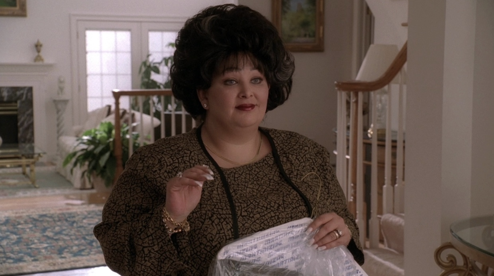
46. Hair stands 11 inches tall. Engaged five times to the same man, named Carl. Hasn't had a waking moment without a piece of gum in her mouth since 1978.
Steph is mid-blowout on a regular when she snaps her gum, mouths "hold on a dear," and slips behind the half-wall to squeeze a Honey Dept. into her mouth without disturbing a single follicle. She returns immediately with a smile and a little bit of honey on her face.
Goes with one perfume forever. Getting ready in the salon (clearly her daily routine), she sprays her perfume with a Honey Dept. in the other hand to chase it with.
Boyfriend

23. Has not initiated a conversation since 2019. Owns a hairless cat named Messiah.
Devon is mid dramatic breakup, sitting with a blank stare. An unfazed sounding board as his girlfriend goes on enthusiastically about his shortcomings and why this relationship isn't going to work — the entire time he can't get his eyes off the stick of Honey Dept. sitting on the table. "Are you even listening to me — hello?"
Goes with checking your phone right after a loud public breakup. She walks away and tosses her water on him. Without reaction he reaches for the honey on the table, eats it, and checks his phone.
Painter

52. Blue-collar painter. A simple man, eats lunch out of the same Igloo cooler he's owned since 1989. Watches a single coat of paint dry for the full eight-hour cure window without leaving the room. Has lived next to the same neighbor for 14 years and still doesn't know his name.
Wesley sits on a beach chair in the middle of a freshly painted room — locked onto the drying wall like a man watching the final 90 seconds of an FA Cup final. He eats a Honey Dept. with the contained excitement of a fan who has waited a long time for this.
Goes with watching paint dry. Wesley still sitting there in the empty room.
Buddhist Monk
35. Ordained at 28. Has not spoken on a telephone in thirteen years.
Pemwa is mid-meditation, eyes closed, sustaining a sonorous "hmmmmm." He cracks open his eyes to ensure everyone else still has theirs closed, then reaches into his robe and produces a Honey Dept. He squeezes some into his mouth and the hum opens into an unmistakable "mmmmm." His eyes go wider. Nobody else has their eyes open to see it.
Goes with meditation. Goes with nobody watching.
Boxer
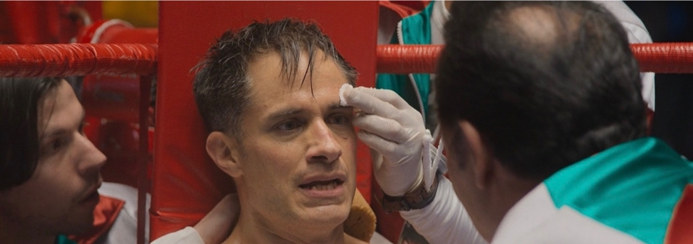
28. Trained by his father in a run-down Bronx gym.
Sammy falls into the stool between rounds, hands coming in from every direction — mouthpiece out, water poured into mouth, ice on a bruise, his trainer shouting tactical corrections. A trainer's hand is out for the vaseline; in comes the Honey Dept., squeezed into his hand. He rubs the honey on Sammy's face as if it were vaseline before realizing — he dips his gloved hand on Sammy's face, licks it, then goes to lick Sammy's face before we cut to title card.
Goes with a 2nd-round knockout.
Window Cleaner
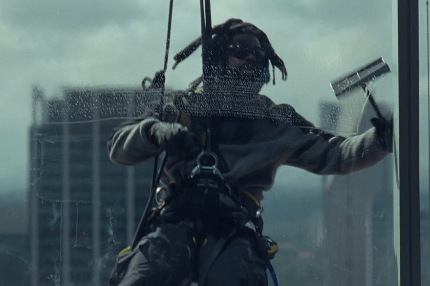
34. Sings opera on the rig. Loudly, badly, with great feeling. Has never been seen without a smile on his face.
Jake appears outside a foam-covered window hundreds of feet in the air, a slow clear arc through the lather, revealing himself: one hand on the rubber, one hand on a Honey Dept. He waves into the office building, singing something operatic and unbothered.
Goes with being suspended 600 feet in the air.
The Williamsons

Travel everywhere by car and Thomas Guide, because they don't "trust" the new technologies.
The Williamsons sit on the shoulder of I-78 watching their hood release a confident jet of steam when a Good Samaritan in a truck rolls down his window and asks if they need help. They light up, beam, giving thanks — and toss a tube of Honey Dept. through his open window. He drives off.
Goes with breaking down with the significant other you can't stand.
Production design will bring all the scenes to life, heightened with bright color palettes, props, fluorescent lights. Everything from the physical space, to casting, to the wardrobe all are to be designed and thought through.
Every set we build, dress, or scout for this campaign is doing comedic work before anyone says a word. The walls have to be the right wrong color. The chair has to be the right wrong chair. We never decorate to a brief — we collect to a feeling.
Locations are real wherever possible. When we build, we build to look found. No production-design fingerprints. Andersson's rule: the production designer should be invisible, and slightly mean.
Each character carries a palette into their room. Honey is the warm note in every one.
Honest, specific, dated. The kind of room a particular person has actually lived in. Wallpaper that's been there a while.
Real garments. No costume. We dress to what a real version of this person owns. Tailoring is allowed; styling is not.
One signature object per character on screen — a medal, a nameplate, a bingo dauber, a Pinarello. Honey is always a prop, never a hero.
Mid-century beige, motel green, fluorescent pink, dust. Each location bringing its own. We don't grade them together; we let the colors argue.
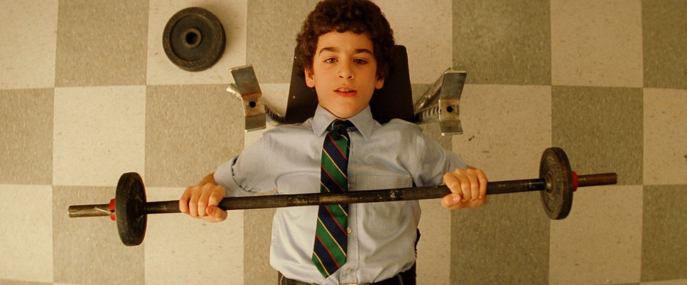
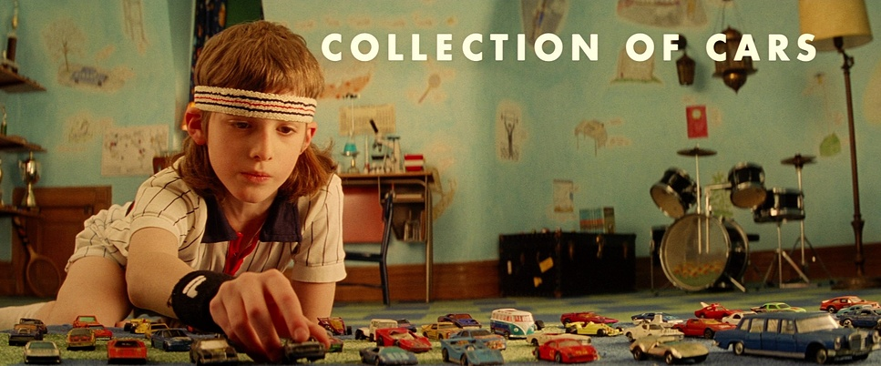
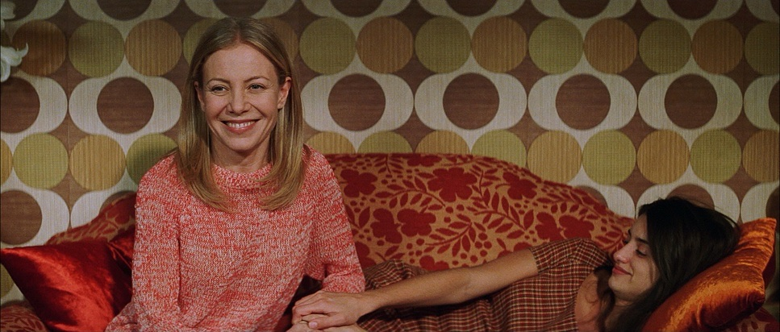
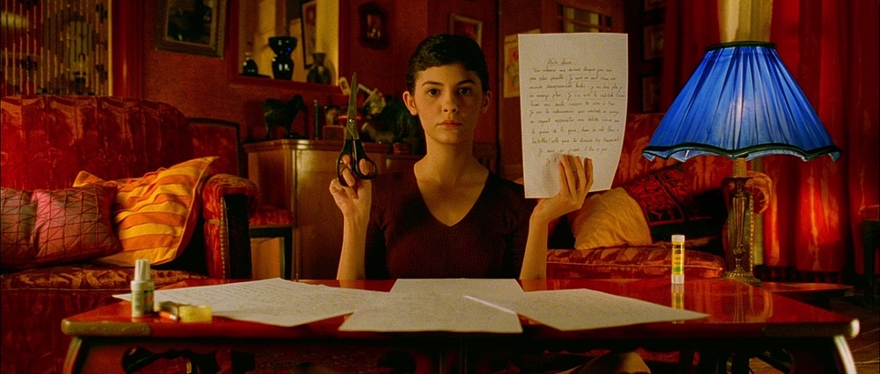
Both films share a cutting rhythm. We hold each shot one beat past comfort. The longer we trust the frame, the funnier it gets. Tati's rule — if you cut on the laugh, you killed the laugh.
Across the campaign we'd build a single edit logic: open on a wide, hold on the eater, cut to the thing they're not noticing, return. Repeat. Vary.
Foley is doing as much work as picture. Every spoon scrape, every chair shift, every wrapper. The honey itself has a sound — slow, viscous, deliberate. We record it. It's the loudest thing in the room when we want it to be.
Sparse and instrumental. Strings, a single woodwind, occasional vibraphone. The score never sells the joke. It sits beside it.
One voice across both films. Warm, dry, slightly older than expected. We'd suggest a curated short list and tape early.
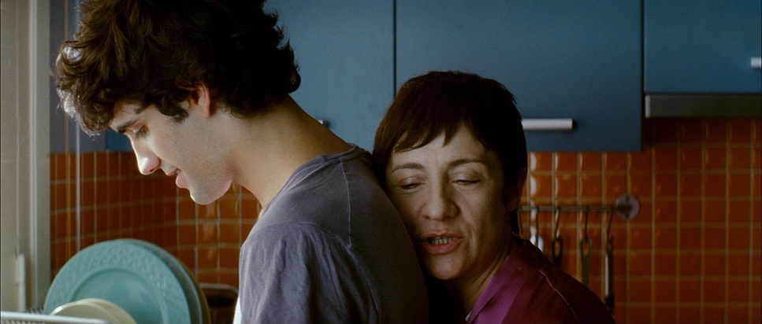

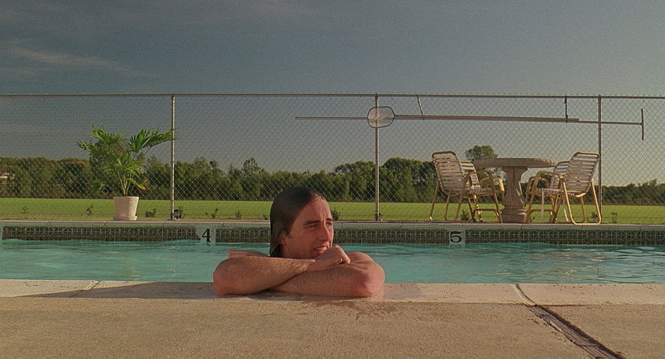


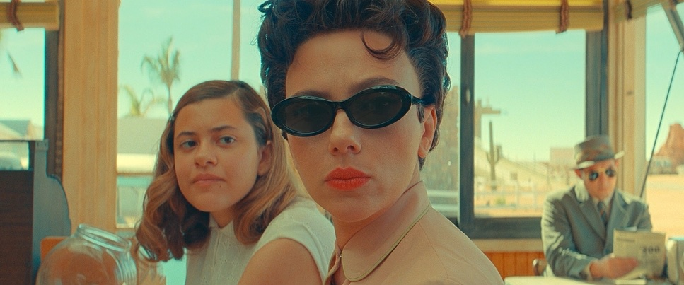